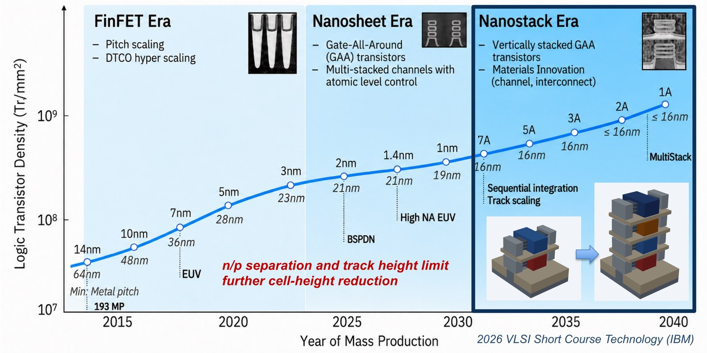
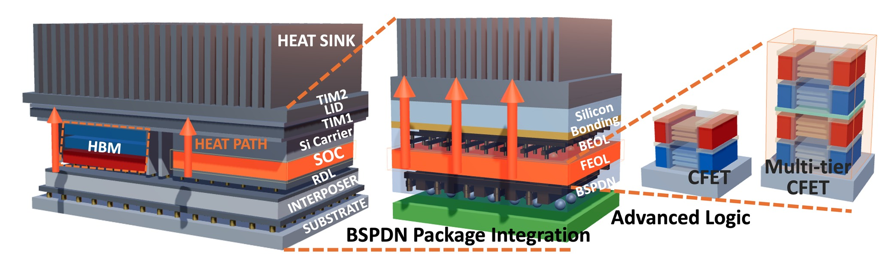
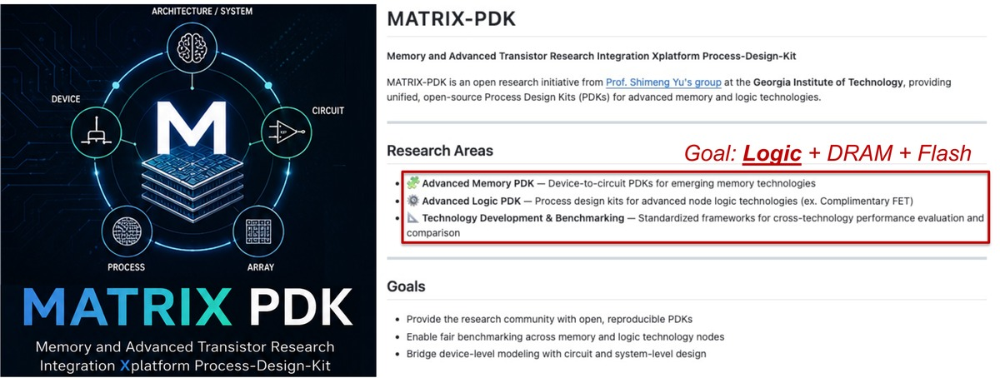
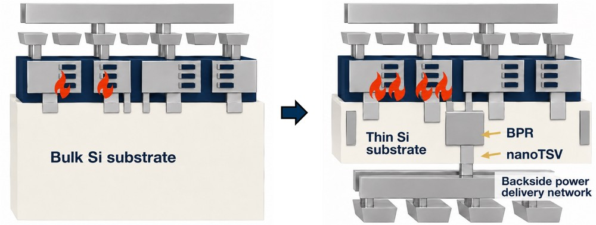
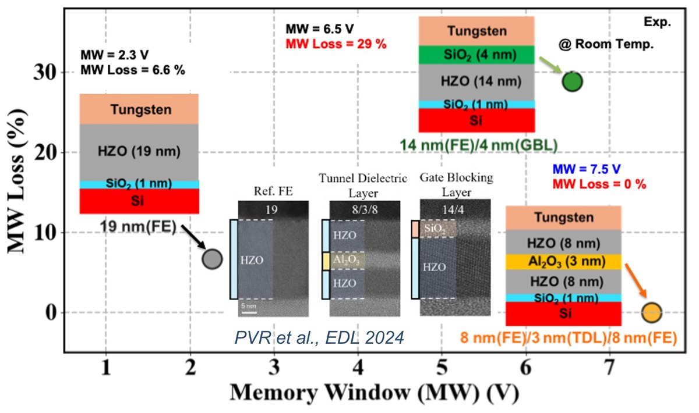
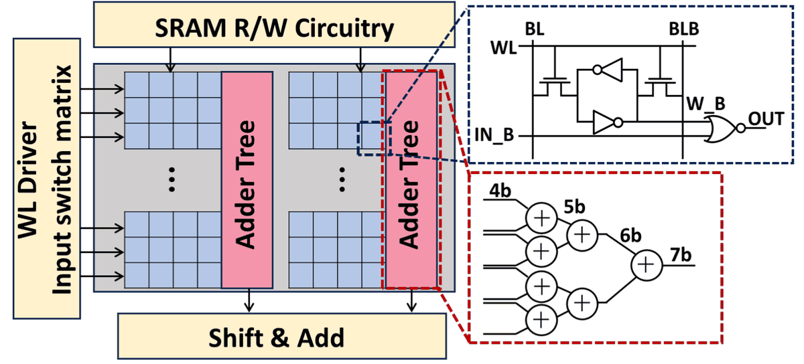

About
I am a Ph.D. candidate in Electrical and Computer Engineering at the Georgia Institute of Technology, advised by Dr. Shimeng Yu in the Laboratory for Emerging Devices and Circuits, and an SRC Research Scholar (SPARC). My thesis is Next-Generation 3D Scaling: Reliability-Aware Device-to-System Co-Optimization for Advanced CMOS Logic and Memory.

Before graduate school I spent seven years at Samsung Electronics as a Technology Quality & Reliability engineer, building the aging-aware design environments, reliability models, and sign-off methodologies behind Exynos SoCs from 14 nm through 4 nm and 3 nm GAA nanosheet technology. That industry background is what shapes my research question: as future technology goes vertical, reliability and heat become the limits that decide how far 3D scaling can go.

I am currently a Design Quality & Reliability Engineer Intern at Intel in Hillsboro, OR, developing physics-informed machine learning methods for pre-silicon reliability of analog IP and memory circuits, targeting CPU, server, and ASIC products.
Research
My thesis asks what 3D scaling costs in heat and reliability, and answers it by carrying electro-thermal device models from TCAD through self-heating-aware compact models up to layout-resolved circuit and system analysis. Four connected threads build that path and the open PDK and multi-tier libraries it runs on.

CFET DTCO & Open PDK
TCAD-calibrated device models and multi-tier standard-cell libraries that make academic DTCO research possible — cell- to block-level PPA and routing-congestion benchmarking on commercial Cadence/Synopsys flows, driven through a RISC-V core and a systolic array.

Electro-Thermal Co-Design
Device-to-system electro-thermal frameworks for multi-tier CFET and GAA nanosheet with backside power delivery — including GPU-accelerated multi-physics simulation and layout-resolved thermal analysis to address thermal constraints in 3D scaling.

Ferroelectric Devices
Time-dependent Sentaurus models of the trap and polarization interplay in FeFET and Fe-NAND stacks, spanning gate-stack and channel-side interlayer engineering, with memory window, retention, and disturb quantified.

3D Compute-in-Memory
Digital compute-in-memory benchmarking on A5 CFET technology, extended to look-up-table-based power efficient design, targeting the memory wall across the memory pyramid.
| Capability | ASAP7 | ASAP5 | FreePDK3 | GT3 | USC 3N-2D | MATRIX-A5(this work) |
|---|---|---|---|---|---|---|
| Institution | ASU | ASU | NCSU | Georgia Tech | USC (SCCAD) | Georgia Tech |
| Node | 7 nm | 5 nm | 3 nm | 3 nm | 3 nm | A5 |
| Device | FinFET | NWFET | GAA NS | GAA NS | GAA NS | CFET |
| Integration | 2D | 2D | 2D | 2D | 2D | 3D stacked device |
| Standard-cell library | ✓ | ✓ | ✗ | ✓ | ✓ | ✓ |
| Multi-Vth flavors | ✓ | ✗ | ✗ | ✗ | ✗ | ✓ |
| Temperature corners | ✓ | ✗ | ✗ | ✗ | ✗ | ✓ |
| RTL-to-GDS flow | ✓ | ✓ | ✓ | ✓ | ✓ | ✓ |
| Backside power (BSPDN) | ✗ | ✗ | ✗ | ✓ | ✓ | ✓ |
| Availability | open | open | open | open | open | will be open |
Experience
Design Quality & Reliability Engineer Intern
Aug 2026 – Jan 2027
- Product Quality Network team: developing physics-informed machine learning methods for pre-silicon reliability of analog IP and memory circuits, targeting CPU, server, and ASIC products.
Graduate Research Assistant
Aug 2023 – Aug 2026
- Open CFET PDK, multi-tier CFET RTL-to-GDS flow & DTCO/STCO — TCAD-calibrated device models and an open-source CFET PDK (six 67-cell library variants) taken through full RTL-to-GDS in commercial Cadence/Synopsys EDA; 40% logic and 43% SRAM cell-footprint reduction from 2-tier to 4-tier, with cell- to block-level PPA and routing-congestion benchmarking (RISC-V core, systolic array).
- Reliability-aware co-optimization — device-to-circuit electro-thermal framework (TCAD to self-heating-aware compact model to ring-oscillator analysis) showing that backside power delivery traps heat and costs >10% frequency degradation at overdrive; GPU-accelerated multi-physics (DeepSim) extended to multi-tier CFET for layout-resolved analysis.
- Broader contributions across the memory pyramid — CFET digital compute-in-memory (DCIM) addressing the memory wall, and ferroelectric gate-stack and channel-side interlayer modeling in FeFET and Fe-NAND stacks, where a gate-injection-layer stack more than doubles the memory window.
Technology Quality & Reliability Engineer
Aug 2016 – Jul 2023- Delivered aging- and variability-aware design methodologies for Samsung Exynos SoCs (14 nm – 4 nm) under advanced reliability sign-off.
- Developed statistical aging simulation modeling and methodology, enabling AEC-Q100 automotive-grade design-for-reliability in 8 nm FinFET products.
- Partnered with Design Technology Enablement to deliver critical-path reliability timing margin from aging simulation directly into the Exynos SoC implementation flow.
- Built aging-aware circuit design environments and PDK components for 3 nm GAA nanosheet technology.
- Built and validated reliability models for HCI, BTI, TDDB, and self-heating, improving prediction accuracy through model-to-hardware correlation against ring-oscillator silicon benchmarks with the WLR and PDK teams.
- Provided DFR for real product operating conditions (multi-step aging, power-down bias instability) rather than idealized stress, closing the gap between qualification and field use.
- Verified overdrive-voltage reliability in non-volatile memory (eFuse, OTP, MRAM) under product stress conditions.
- Prior internship (Jul – Aug 2016): implemented enhanced Dynamic Device Voltage Check (DDVC); strengthened safe-operating-area (SOA) validation and voltage-stress reliability sign-off across advanced nodes.
Education
Georgia Institute of Technology
Ph.D., Electrical and Computer Engineering · Atlanta, GA
Sogang University
B.S., Electronic Engineering · Seoul, South Korea · summa cum laude
University of Connecticut
International Student Exchange, Electrical and Computer Engineering · Storrs, CT
Technical Skills
- Focus
- Reliability- and thermal-aware DTCO/STCO; multi-tier CFET and 3D integration; ferroelectric device modeling; aging and reliability sign-off.
- Reliability physics & sign-off
- HCI, BTI, TDDB, self-heating, SOA; statistical aging simulation; model-to-hardware correlation; AEC-Q100 automotive qualification.
- TCAD & device
- Sentaurus electro-thermal device/process; BSIM-CMG compact modeling.
- VLSI design
- Cadence and Synopsys synthesis, P&R, and reliability sign-off; full PDK build and verification (LIB/LEF, LPE, DRC/LVS); critical-path timing-margin analysis.
- Circuit simulation
- SPICE (HSPICE, FineSim, Spectre) with aging engines (RelXpert, MOSRA); Dynamic Device Voltage Check (DDVC); multi-step and power-down-bias stress modeling.
- Technologies
- FinFET, GAA nanosheet, multi-tier CFET, backside power delivery, ferroelectric-based memory.
- Programming
- Python, TCL, Perl, C, MATLAB, SystemVerilog.
Honors & Awards
- Best Paper Award, Runner-Up — IEEE Device Research Conference (DRC) Jun 2025
- Silicon Creations ISSCC Travel Grant Feb 2024
- Conference Travel Grants — APCCAS'24, IRPS'25, DRC'25, IEDM'25 (presentation) 2024 – 2025
- CSE Department Fellowship (offered) — University of Minnesota–Twin Cities Jan 2023
- Summa cum laude — Sogang University; Dean's List Aug 2016
- Full National Scholarship (Merit) — Korea Student Aid Foundation 2014 – 2016
- Honors Scholarship (Merit) — Sogang University 2012 – 2015
Leadership & Service
- Ministry Team Leader, Grad CRU — Georgia Institute of Technology 2024 – Present
- Education Mentor / Sub-Course Manager — Samsung Electronics 2019, 2020, 2022 Delivered onboarding for 200+ new hires: "Global Business Manners," "Communication & Creative Thinking."